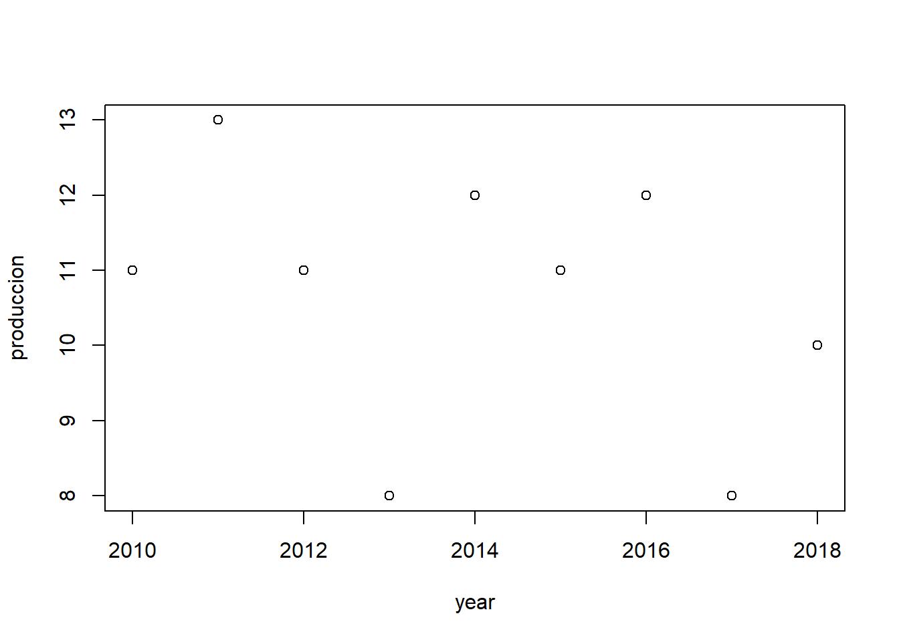
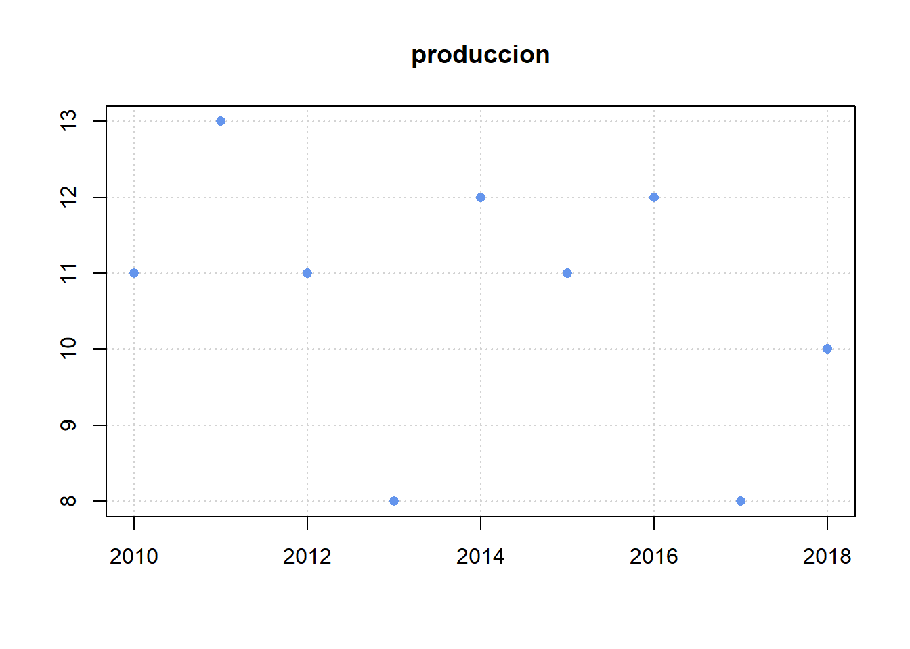
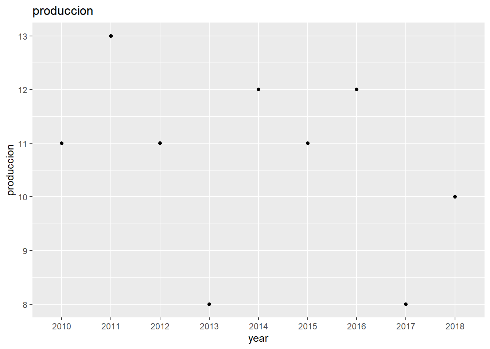
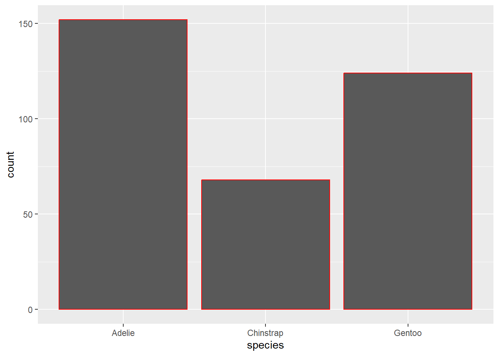
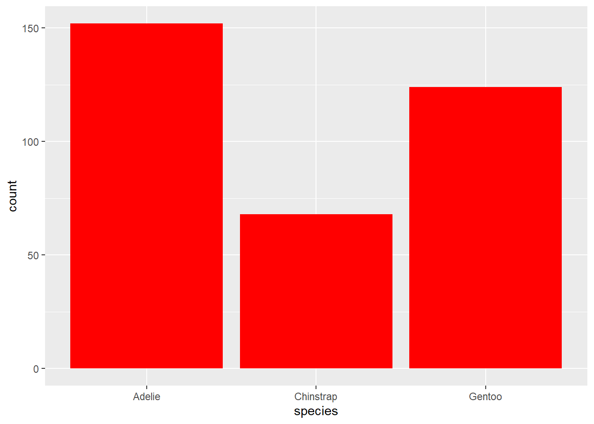

library(tidyverse)Semana 3
Ejemplo 1 (Leer archivo CSV con la libreria tidyverse)
- En este paso se coloca la librería que utilizaremos, en este caso sería tidyverse
- luego procedemos ha crear una variable con nombre datos, la misma se le asignará el archivo que se leerá, en este caso sería el archivo con nombre Datos_Ejemplo, el mismo contiene un formato csv.
Por otra parte se utiliza la función read_csv, esta función se encarga de leer un fichero de valores separados por comas (formato CSV) y lo vuelca en un dataframe, incluyéndo gran candidad de parámetros para determinar cómo se realiza la lectura y cómo deberán tratarse los datos leídos
datos <- read_csv("C:\\Users\\anton\\OneDrive\\Documentos\\Ejemplos_R\\Datos_Ejemplo.csv")Warning: One or more parsing issues, call `problems()` on your data frame for details,
e.g.:
dat <- vroom(...)
problems(dat)Rows: 22 Columns: 1
── Column specification ────────────────────────────────────────────────────────
Delimiter: ","
chr (1): ;Base de datos de productos;;;;;;;;
ℹ Use `spec()` to retrieve the full column specification for this data.
ℹ Specify the column types or set `show_col_types = FALSE` to quiet this message.- Por ultimo se imprime la información de los datos leidos
datos# A tibble: 22 × 1
`;Base de datos de productos;;;;;;;;`
<chr>
1 ";;;;;;;;;"
2 "IdProducto;NombreProducto;Proveedor;Categor\xeda;CantidadPorUnidad;PrecioUn…
3 "1;T\xe9 Dharamsala;Exotic Liquids;Bebidas;10 cajas x 20 bolsas;18.00 \x80;3…
4 "2;Cerveza tibetana Barley;Exotic Liquids;Bebidas;24 - bot. 12 l;19.00 \x80;…
5 "3;Sirope de regaliz;Exotic Liquids;Condimentos;12 - bot. 550 ml;10.00 \x80;…
6 "4;Especias Cajun del chef Anton;New Orleans Cajun Delights;Condimentos;48 -…
7 "5;Mezcla Gumbo del chef Anton;New Orleans Cajun Delights;Condimentos;36 caj…
8 "6;Mermelada de grosellas de la abuela;Grandma Kelly's Homestead;Condimentos…
9 "7;Peras secas org\xe1nicas del t\xedo Bob;Grandma Kelly's Homestead;Frutas/…
10 "8;Salsa de ar\xe1ndanos Northwoods;Grandma Kelly's Homestead;Condimentos;12…
# ℹ 12 more rowsEjemplo 2 (Se utiliza la libreria gapminder para los datos que vamos a leer y se filtra con filter)
#Se procedio a realizar las instalaciones de los paquetes a utilizar
#install.packages("tidyverse")
library(gapminder)
library(tidyverse)
data("gapminder")
#Se muestra una base de datos como ejemplo
head(gapminder)# A tibble: 6 × 6
country continent year lifeExp pop gdpPercap
<fct> <fct> <int> <dbl> <int> <dbl>
1 Afghanistan Asia 1952 28.8 8425333 779.
2 Afghanistan Asia 1957 30.3 9240934 821.
3 Afghanistan Asia 1962 32.0 10267083 853.
4 Afghanistan Asia 1967 34.0 11537966 836.
5 Afghanistan Asia 1972 36.1 13079460 740.
6 Afghanistan Asia 1977 38.4 14880372 786.#Se realiza filtracion de datos
filter(gapminder, country =='Mexico')# A tibble: 12 × 6
country continent year lifeExp pop gdpPercap
<fct> <fct> <int> <dbl> <int> <dbl>
1 Mexico Americas 1952 50.8 30144317 3478.
2 Mexico Americas 1957 55.2 35015548 4132.
3 Mexico Americas 1962 58.3 41121485 4582.
4 Mexico Americas 1967 60.1 47995559 5755.
5 Mexico Americas 1972 62.4 55984294 6809.
6 Mexico Americas 1977 65.0 63759976 7675.
7 Mexico Americas 1982 67.4 71640904 9611.
8 Mexico Americas 1987 69.5 80122492 8688.
9 Mexico Americas 1992 71.5 88111030 9472.
10 Mexico Americas 1997 73.7 95895146 9767.
11 Mexico Americas 2002 74.9 102479927 10742.
12 Mexico Americas 2007 76.2 108700891 11978.Ejemplo 3 (Implementación de graficas utilizando libreria ggplot2)
#datos de la primera parte
year <- c('2010', '2011', '2012', '2013', '2014', '2015', '2016', '2017', '2018')
produccion <- c(11, 13, 11, 8, 12, 11, 12, 8, 10)
# graficando con codigo
plot(x = year, y = produccion)
# editando la grafica
plot(x = year, y = produccion, main = 'produccion', xlab = '', ylab = '', col = 'cornflowerblue', pch = 16, panel.first = grid ())
# Graficas con ggplot2
# install.package(ggplot2) # para instalar ggplot2
library(ggplot2)
# hacer dataframe
peliculas <- data.frame(year,
produccion)
# graficar utilizando ggplot
ggplot(data = peliculas, mapping = aes(x = year, y = produccion)) + geom_point() + labs(title = 'produccion')
Ejemplo 4 (Se utiliza la libreria stringr)
En este ejemplo se utilizara las librerias stringr que tiene la funcion de manipular cadenas: copiar, cambiar caracteres, comparar cadenas, etc.
library(stringr)
library(tidyverse)En esta parte se crea un vector con distintos nombre, luego se agrupa por medio de una coma, para que al momento de la impresion quede ordemadamente y separados por coma.
x <- c ("why", "video", "cross", "extra", "deal", "authority")
str_length(x)[1] 3 5 5 5 4 9str_c(x, collapse = ",")[1] "why,video,cross,extra,deal,authority"Aqui se realiza un filtrado de datos en la linea de caracteres que tenemos en el vector X, con la finalidad de, mostrar la primera vocal de cada palabra que encontramos en las palabras mostradas en el vector
str_extract(string = x, pattern = "[aeiou]")[1] NA "i" "o" "e" "e" "a"En este proceso se analiza los caracteres asignados en la variable palabra, donde le solicitamos mostrar los caracteres que se encuentran entre la posición 5 hasta la posición 13.
palabra <- "Univesidad de Panama"
str_sub(string = palabra, start = 5, end = 13)[1] "esidad de"Ejemplo 5 (Utilización de librerias palmerpenguins y ggthemes)
Luego de haber instalado las lobrerias se procede a llamarlas
library(palmerpenguins)
library(ggthemes)En este ejemplo se trata de mostrar la diferencia que tiene la funcion de color, con fill.
Aquí logramos observar que si utilizamos función de color nos resalta todo el volumen de las barras y si utilizamos la función de fill se resalta el borde de las barras.
ggplot(penguins, aes(x = species)) +
geom_bar(color = "red")
ggplot(penguins, aes(x = species)) +
geom_bar(fill = "red")
Asignacion 1 (Manipular dataframes y hacer operaciones)
library(DT)
library(readxl)
library(dplyr)
library(tibble)
library(purrr)Se ubican los archivos que vamos ha trabajar
datatable(Plantas_datos<-read_xlsx("C:\\Users\\anton\\OneDrive\\Documentos\\Ejemplos_R\\datos_asignacion_2_data_1.xlsx"))datatable(Tipo_energia<-read_xlsx("C:\\Users\\anton\\OneDrive\\Documentos\\Ejemplos_R\\datos_asignacion_2_data_2.xlsx"))Operaciones realizadas utilizando la columna A
columna_A <- select(Tipo_energia, A)
`Fila 1` <- rep(columna_A[1,1] %>% as.numeric)
`Fila 2` <- rep(columna_A[2,1] %>% as.numeric)
`Fila 3` <- rep(columna_A[3,1] %>% as.numeric)
nueva_tabla <- Plantas_datos %>% add_column(., `Fila 1`,.after = "instalada") %>% add_column(., `Fila 2`,.after = "generacion") %>% add_column(., `Fila 3`,.after = "firme")
datatable(nueva_tabla) `multi columna 1`<-(nueva_tabla[1,2] * nueva_tabla[1,3]) + (nueva_tabla[1,4] * nueva_tabla[1,5]) + (nueva_tabla[1,6] * nueva_tabla[1,7])
`multi columna 2`<-(nueva_tabla[2,2] * nueva_tabla[2,3]) + (nueva_tabla[2,4] * nueva_tabla[2,5]) + (nueva_tabla[2,6] * nueva_tabla[2,7])
`multi columna 3`<-(nueva_tabla[3,2] * nueva_tabla[3,3]) + (nueva_tabla[3,4] * nueva_tabla[3,5]) + (nueva_tabla[3,6] * nueva_tabla[3,7])
mult_tabl <- rbind(`multi columna 1` , `multi columna 2` , `multi columna 3`)
colnames(mult_tabl) <- "Valores"
datatable(mult_tabl)Resultado final obtenidos para la columna A
resultado_final <- nueva_tabla %>% add_column(., mult_tabl,.after = "planta")
datatable(resultado_final)Operaciones realizadas utilizando la columna B
columna_B <- select(Tipo_energia, B)
`Fila 1B` <- rep(columna_B[1,1] %>% as.numeric)
`Fila 2B` <- rep(columna_B[2,1] %>% as.numeric)
`Fila 3B` <- rep(columna_B[3,1] %>% as.numeric)
nueva_tabla2 <- Plantas_datos %>% add_column(., `Fila 1B`,.after = "instalada") %>% add_column(., `Fila 2B`,.after = "generacion") %>% add_column(., `Fila 3B`,.after = "firme")
datatable(nueva_tabla2) `multi columna 1B`<-(nueva_tabla2[1,2] * nueva_tabla2[1,3]) + (nueva_tabla2[1,4] * nueva_tabla2[1,5]) + (nueva_tabla2[1,6] * nueva_tabla2[1,7])
`multi columna 2B`<-(nueva_tabla2[2,2] * nueva_tabla2[2,3]) + (nueva_tabla2[2,4] * nueva_tabla2[2,5]) + (nueva_tabla2[2,6] * nueva_tabla2[2,7])
`multi columna 3B`<-(nueva_tabla2[3,2] * nueva_tabla2[3,3]) + (nueva_tabla2[3,4] * nueva_tabla2[3,5]) + (nueva_tabla2[3,6] * nueva_tabla2[3,7])
mult_tabl_B <- rbind(`multi columna 1B` , `multi columna 2B` , `multi columna 3B`)
colnames(mult_tabl_B) <- "Valores"
datatable(mult_tabl_B)Resultado final obtenidos para la columna B
resultado_final_B <- nueva_tabla2 %>% add_column(., mult_tabl_B,.after = "planta")
datatable(resultado_final_B)